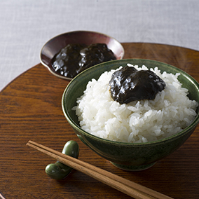

野里屋
味付け海苔 100枚入り
食べたい時に食べたい分だけ取り出せる、 保存に便利な卓上タイプのお徳用味付のりです。 北海道産の真昆布だしの旨味が特徴です。 海苔の原料は国産原料を使用。 毎日の朝ごはんや行楽のお供にどうぞ。
500円(税抜)
数量
カートにいれる
購入金額2000円(税抜)以上で、配送料無料！
商品詳細
| メーカー | 野里屋 |
| 原産国名 | 日本 |
| 梱包サイズ | 14.8 x 9.9 x 9.9 cm |
| 商品の質量 | 110g |
| 原材料 | 乾のり(国産)、醤油(大豆(遺伝子 組換えでない))、砂糖、昆布エキ ス、みりん、清酒、唐辛子、エビ エキス、昆布、食塩/調味料(アミ ノ酸等)、甘味料(甘草)、(一部に 小麦・えび・大豆を含む) |
関連するアイテム
ノリノリカンパニー
おにぎり用海苔

のり子食品
海苔の佃煮
ノリハムニダ